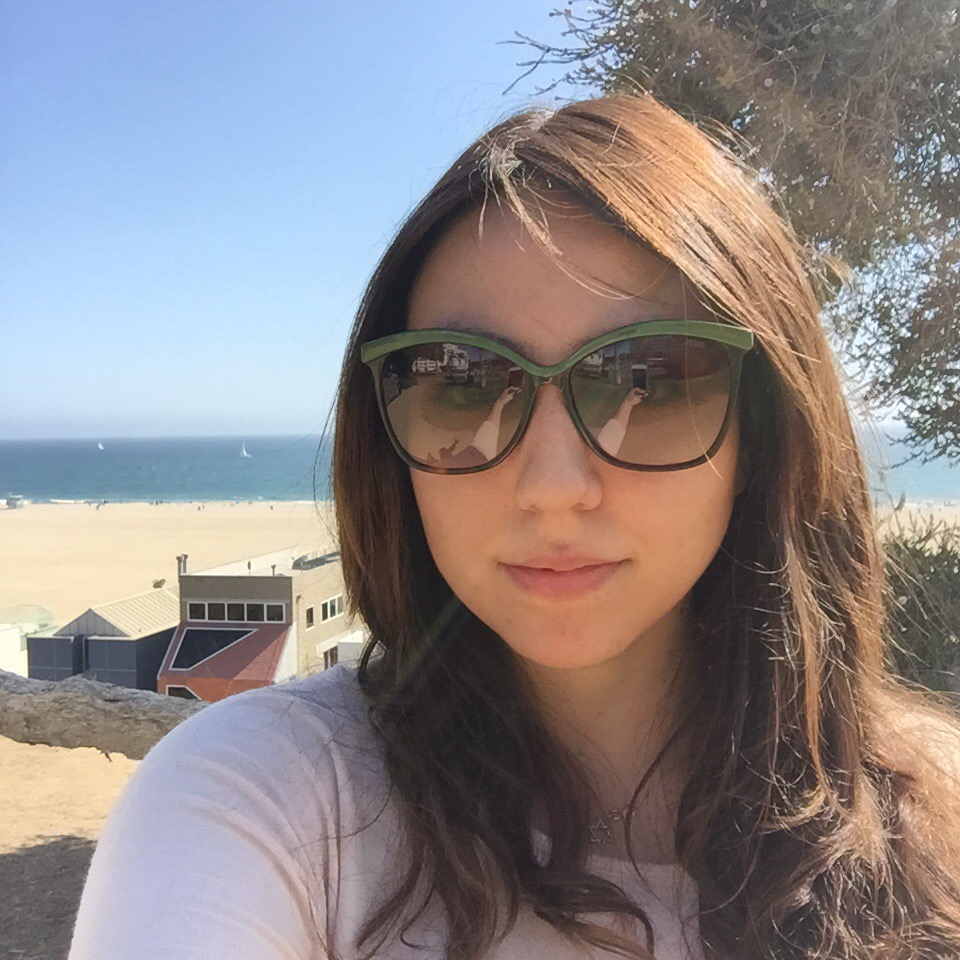

Jaia Bautista - Fullstack Track

About Jaia
Jaia is curious about how things are built from scratch. She tried lots of website builders but none really catered to her creative vision. Instead, Jaia decided to learn how to code.
Jaia's learning goals in Reskill Americans
- Connect with like-minded individuals and make long lasting friendships
- Gain self-confidence to promote herself as Fullstack Developer
- Learn how to properly write production code
- Gain working knowledge and get confident with JavaScript to build SPAs and Web Apps
- Learn how to manipulate the DOM with JavaScript to create rich user experiences
- Learn to design APIs
- Complete this course successfully